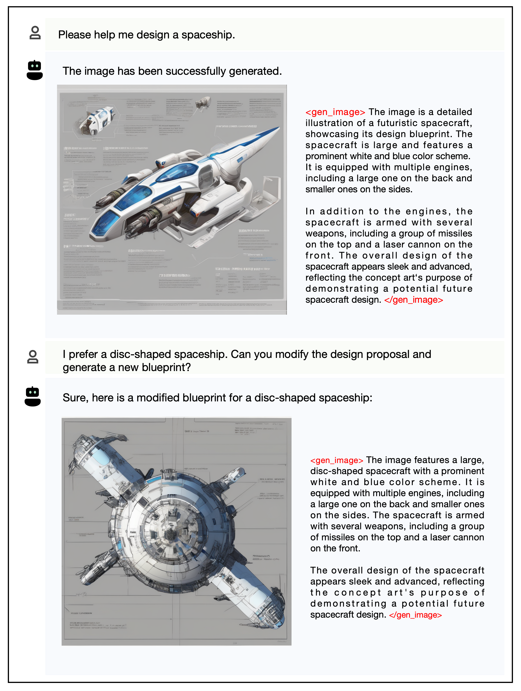
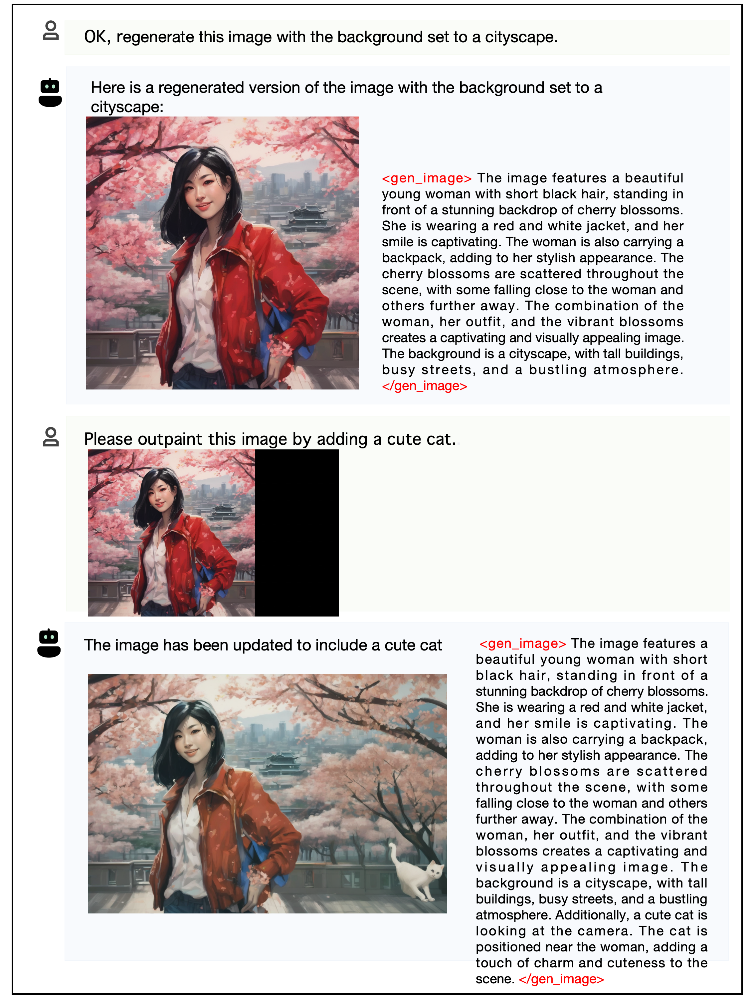
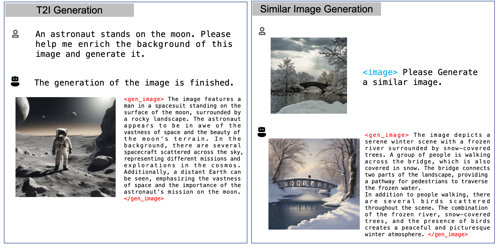
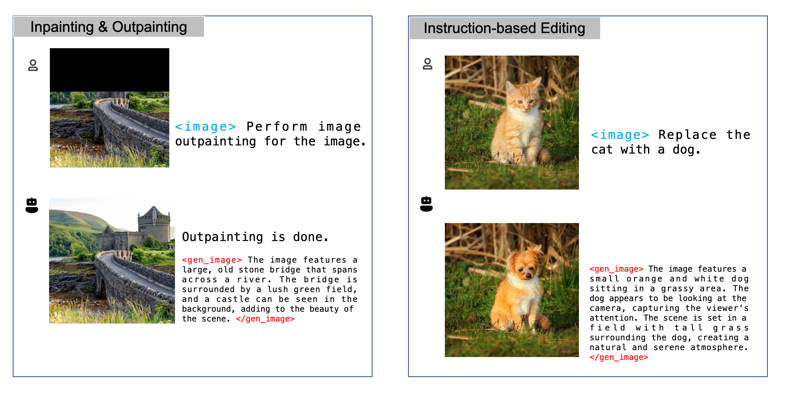
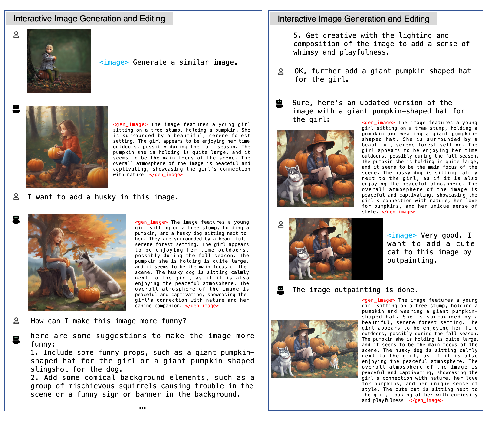
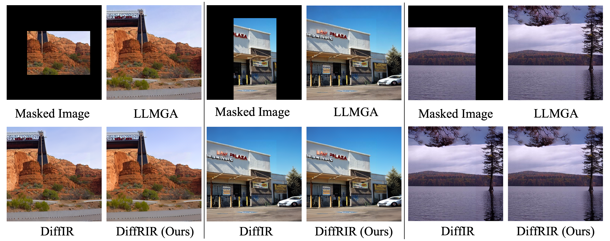

Interactive image generation and editing exemplify the comprehensive capabilities of LLMGA.
Users can design satisfactory images by engaging in interactions with LLMGA, leveraging its vast knowledge and ideas.
Abstract
Currently, the success of large language models (LLMs) illustrates that a unified multitasking approach can significantly enhance model usability, streamline deployment, and foster synergistic benefits across different tasks. However, in computer vision, while text-to-image (T2I) models have significantly improved generation quality through scaling up, their framework design did not initially consider how to unify with downstream tasks, such as various types of editing. To address this, we introduce DreamOmni, a unified model for image generation and editing. We begin by analyzing existing frameworks and the requirements of downstream tasks, proposing a unified framework that integrates both T2I models and various editing tasks. Furthermore, another key challenge is the efficient creation of high-quality editing data, particularly for instruction-based and drag-based editing. To this end, we develop a synthetic data pipeline using sticker-like elements to synthesize accurate, high-quality datasets efficiently, which enables editing data scaling up for unified model training. For training, DreamOmni jointly trains T2I generation and downstream tasks. T2I training enhances the model's understanding of specific concepts and improves generation quality, while editing training helps the model grasp the nuances of the editing task. This collaboration significantly boosts editing performance. Extensive experiments confirm the effectiveness of DreamOmni.
Why do you need LLMGA
- Generation Assiatant. As a unified system, LLMGA can generate and edit images using methods such as Text-to-Image (T2I), inpainting, outpainting, and instruction-based editing through conversational interactions with users. By leveraging the extensive knowledge and understanding of image design from LLMGA, users can easily produce and revise images to obtain highly satisfactory images.
- Design Expert. LLMGA incorporates an extensive array of image design data, offering deep insights for a wide range of design tasks, including logo creation, game character design, poster design, T-shirt design, infographic design, and more.
- Illustration Generation. LLMGA can interactively generate story illustrations based on user-input story snippets.
- Picture Book Generation. With a single user's instruction, LLMGA can generate an interwoven storybook of text and illustrations.
- Multilingual Support. Through the multilingual adaptation of the LLMGA, T2I and editing model can generate content using Chinese language instructions.
- Flexible Expansion. LLMGA offers enhanced flexibility by integrating with external plugins like ControlNet, enabling a wider range of functionalities.
- To be continued ......
 Method
Method

Examples of LLMGA for assisting in image generation and editing
1 / 8

2 / 8

Amazing and vivid generation results for T2I.
3 / 8

Amazing and vivid generation results for T2I.
4 / 8

(1) For T2I generation, LLMGA can refine the user's generation prompt to produce more vivid and vibrant images.
(2) For similar image generation, LLMGA can understand the component and layout of the input images and generate a similar image.
(2) For similar image generation, LLMGA can understand the component and layout of the input images and generate a similar image.
5 / 8

(1) For inpainting & outpainting, LLMGA can provide detailed generation prompts based on user preferences and input images.
(2) For instruction based editing, LLMGA can understand user instructions and realize accurate editing.
(2) For instruction based editing, LLMGA can understand user instructions and realize accurate editing.
6 / 8

Interactive image generation and editing exemplify the comprehensive capabilities of LLMGA.
Users can design satisfactory images by engaging in interactions with LLMGA, leveraging its vast knowledge and ideas.
Users can design satisfactory images by engaging in interactions with LLMGA, leveraging its vast knowledge and ideas.
7 / 8

Picture book generation (Directly taken from the gradio demo screenshot)
8 / 8

Design Expert (Directly taken from the gradio demo screenshot)
 Performance
Performance
Visual comparison on T2I
LLMGA can refine short prompts by adding details, such as clothing, background, and actions.

Visual comparison on T2I plus ControlNet
LLMGA can enhance the details in generated images, producing visually pleasing images.

Visual comparison on instruction-based editing
LLMGA obtains strong instruction-based editing ability and results in high quality image results .

Visual comparison on inpainting and outpainting
LLMGA can infer complete images based on input masked images.

Visual comparison of image restoration methods
Visual comparison of image restoration methods. DiffRIR can alleviate the texture, contrast, and brightness disparities in inpainting & outpainting results.


BibTeX